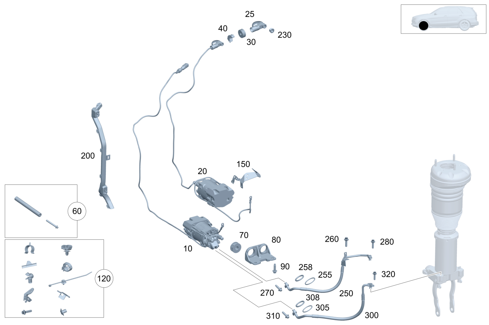

| № | Артикул | Название | Кол. | Примечание | Ограничение |
|---|---|---|---|---|---|
| 10 | A 167 320 95 01 | Насос гидравлический (HYDRAULIKPUMPE) | 1 | СПЕРЕДИ СЛЕВА [675] ПОСЛЕ МОНТАЖА ОБНОВИТЬ ПО И ЗАКОДИРОВАТЬ БУ. | 490 |
| 20 | A 167 320 96 01 | Насос гидравлический (HYDRAULIKPUMPE) | 1 | СПЕРЕДИ СПРАВА [675] ПОСЛЕ МОНТАЖА ОБНОВИТЬ ПО И ЗАКОДИРОВАТЬ БУ. | 490 |
| 25 | A 000 540 90 03 | - PLUG CONNECTOR HOUSING (STECKVERBINDERGEHAEUSE) | 1 | 1\-PIN M8 RUNDBOLZEN | 490 |
| 30 | A 000 545 46 12 | - Прокладка корпуса (GEHAEUSEDICHTUNG) | 1 | 490 | |
| 40 | A 000 545 69 12 | - Крышка корпуса (ABDECKUNG GEHAEUSE) | 2 | 490 | |
| 60 | A 167 327 75 01 | Комплект упорной втулки (TEILESATZ ANSCHLAGHUELSE) | 1 | CONNECTION BETWEEN HYDRAULIC PUMPS | 490 |
| 70 | A 167 326 14 00 | Эластомерная опора (ELASTOMERLAGER) | 4 | ЛЕВЫЙ И ПРАВЫЙ | 490 |
| 80 | A 167 320 01 43 | Держатель (HALTER) | 2 | ЛЕВЫЙ И ПРАВЫЙ | 490 |
| 90 | N 000000 006421 | Винт с 6-гранной головкой (SECHSKANTSCHRAUBE) | 4 | К КРОНШТЕЙНУ; M12X1,5X25 | 490 |
| 120 | A 167 320 34 04 | Комплект держателя (TEILESATZ HALTER) | 1 | НА ГИДРАВЛИЧЕСКОМ НАСОСЕ СПЕРЕДИ | 490 |
| 150 | A 167 546 43 01 | Держатель трубопровода (LEITUNGSHALTER) | 1 | 490 | |
| 200 | A 167 546 12 01 | Кабельный канал (KABELKANAL) | 1 | ДЛЯ ВЕРХНЕЙ ФИКСАЦИИ КАБЕЛЯ | 490/465 |
| 230 | N 000000 008271 | Гайка (MUTTER) | 1 | ВНУТРЕННИЙ КОРПУС ШТЕКЕРНОГО СОЕДИНИТЕЛЯ; M8 | 490/465 |
| 250 | A 167 320 01 54 | Напорный маслопровод (OELDRUCKLEITUNG) | 1 | СПЕРЕДИ СЛЕВА | 490 |
| 250 | A 167 320 02 54 | Напорный маслопровод (OELDRUCKLEITUNG) | 1 | СПЕРЕДИ СПРАВА | 490 |
| 255 | A 000 997 90 14 | - Кольцевая прокладка (O-RING) | 2 | К НАПОРНОМУ МАСЛОПРОВОДУ; 14X1.25MM | 490 |
| 258 | A 000 997 89 14 | - Кольцевая прокладка (O-RING) | 2 | К НАПОРНОМУ МАСЛОПРОВОДУ; 11.6X2MM | 490 |
| 260 | N 000000 006341 | Винт с 6-гр. глвк (SECHSRUNDSCHRAUBE) | 1 | КРЕПЛЕНИЕ НАПОРНОГО МАСЛОПРОВОДА (ПЕРЕДН. ЛЕВ.) | 490 |
| 260 | N 000000 006341 | Винт с 6-гр. глвк (SECHSRUNDSCHRAUBE) | 1 | КРЕПЛЕНИЕ НАПОРНОГО МАСЛОПРОВОДА (ПЕРЕДН. ПРАВ.) | 490 |
| 270 | A 000 990 44 25 | Винт Torx External (SCHRAUBE MIT SECHSRUND) | 1 | К ГИДРАВЛИЧЕСКОМУ НАСОСУ (ПЕРЕДН. ЛЕВ.); M8X30 | 490 |
| 270 | A 000 990 44 25 | Винт Torx External (SCHRAUBE MIT SECHSRUND) | 1 | К ГИДРАВЛИЧЕСКОМУ НАСОСУ (ПЕРЕДН. ПРАВ.); M8X30 | 490 |
| 280 | A 000 990 44 25 | Винт Torx External (SCHRAUBE MIT SECHSRUND) | 1 | НА АМОРТИЗАТОРЕ СЛЕВА; M8X30 | 490 |
| 280 | A 000 990 44 25 | Винт Torx External (SCHRAUBE MIT SECHSRUND) | 1 | НА АМОРТИЗАТОРЕ СПРАВА; M8X30 | 490 |
| 300 | A 167 320 03 54 | Напорный маслопровод (OELDRUCKLEITUNG) | 1 | СПЕРЕДИ СЛЕВА | 490 |
| 300 | A 167 320 04 54 | Напорный маслопровод (OELDRUCKLEITUNG) | 1 | СПЕРЕДИ СПРАВА | 490 |
| 305 | A 000 997 90 14 | - Кольцевая прокладка (O-RING) | 2 | К НАПОРНОМУ МАСЛОПРОВОДУ; 14X1.25MM | 490 |
| 308 | A 000 997 89 14 | - Кольцевая прокладка (O-RING) | 2 | К НАПОРНОМУ МАСЛОПРОВОДУ; 11.6X2MM | 490 |
| 310 | A 000 990 44 25 | Винт Torx External (SCHRAUBE MIT SECHSRUND) | 1 | К ГИДРАВЛИЧЕСКОМУ НАСОСУ (ПЕРЕДН. ЛЕВ.); M8X30 | 490 |
| 310 | A 000 990 44 25 | Винт Torx External (SCHRAUBE MIT SECHSRUND) | 1 | К ГИДРАВЛИЧЕСКОМУ НАСОСУ (ПЕРЕДН. ПРАВ.); M8X30 | 490 |
| 320 | A 000 990 44 25 | Винт Torx External (SCHRAUBE MIT SECHSRUND) | 1 | НА АМОРТИЗАТОРЕ СЛЕВА; M8X30 | 490 |
| 320 | A 000 990 44 25 | Винт Torx External (SCHRAUBE MIT SECHSRUND) | 1 | НА АМОРТИЗАТОРЕ СПРАВА; M8X30 | 490 |
| 400 | A 167 320 97 01 | Насос гидравлический (HYDRAULIKPUMPE) | 1 | СЗАДИ СЛЕВА [672] ДЕТАЛЬ ПОСЛЕ УСТАН.ПРОВЕРИТЬ НА АКТУАЛЬНОСТЬ "ПРОШИВНОГО" ПО | 490 |
| 400 | A 167 320 99 07 | Насос гидравлический | 1 | СЗАДИ СЛЕВА | 490+(807/808)/M177+M40+M036+490+(807/808) |
| 400 | A 167 320 99 07 | Насос гидравлический | 1 | СЗАДИ СЛЕВА | 490/M177+M40+M036+490 |
| 410 | A 167 320 98 01 | Насос гидравлический (HYDRAULIKPUMPE) | 1 | СЗАДИ СПРАВА [672] ДЕТАЛЬ ПОСЛЕ УСТАН.ПРОВЕРИТЬ НА АКТУАЛЬНОСТЬ "ПРОШИВНОГО" ПО | 490 |
| 410 | A 167 320 07 08 | Насос гидравлический | 1 | СЗАДИ СПРАВА | 490+(807/808)/M177+M40+M036+490+(807/808) |
| 410 | A 167 320 07 08 | Насос гидравлический | 1 | СЗАДИ СПРАВА | 490/M177+M40+M036+490 |
| 420 | A 000 540 90 03 | - PLUG CONNECTOR HOUSING (STECKVERBINDERGEHAEUSE) | 1 | СЗАДИ СЛЕВА; 1\-PIN M8 RUNDBOLZEN | 490 |
| 420 | A 000 540 93 03 | - PLUG CONNECTOR HOUSING (STECKVERBINDERGEHAEUSE) | 1 | СЗАДИ СПРАВА; 1\-PIN M8 RUNDBOLZEN | 490 |
| 430 | A 000 545 46 12 | - Прокладка корпуса (GEHAEUSEDICHTUNG) | 1 | 490 | |
| 440 | A 000 545 69 12 | - Крышка корпуса (ABDECKUNG GEHAEUSE) | 2 | 490 | |
| 460 | A 167 327 75 01 | Комплект упорной втулки (TEILESATZ ANSCHLAGHUELSE) | 1 | CONNECTION BETWEEN HYDRAULIC PUMPS | 490 |
| 470 | A 167 326 14 00 | Эластомерная опора (ELASTOMERLAGER) | 4 | Слева и справа | 490 |
| 480 | A 167 320 03 43 | Держатель (HALTER) | 1 | СЗАДИ СЛЕВА | 490 |
| 480 | A 167 320 04 43 | Держатель (HALTER) | 1 | СЗАДИ СПРАВА | 490 |
| 490 | N 000000 004247 | Винт с 6-гранной головкой (SECHSKANTSCHRAUBE) | 2 | К КРОНШТЕЙНУ | 490 |
| 495 | N 000000 006421 | Винт с 6-гранной головкой (SECHSKANTSCHRAUBE) | 2 | К КРОНШТЕЙНУ; M12X1,5X25 | 490 |
| 520 | A 167 320 40 04 | Комплект защитного экрана (TEILESATZ ABSCHIRMBLECH) | 1 | НИЖН. ГИДРАВЛИЧЕСКИЙ НАСОС (ЛЕВ. И ПРАВ.) | 490 |
| 540 | A 167 320 39 04 | Комплект держателя (TEILESATZ HALTER) | 1 | НА ГИДРАВЛИЧЕСКОМ НАСОСЕ СЗАДИ | 490 |
| 550 | A 167 546 43 01 | Держатель трубопровода (LEITUNGSHALTER) | 1 | 490 | |
| 580 | A 167 546 13 01 | Кабельный канал (KABELKANAL) | 1 | ДЛЯ НИЖНЕЙ ФИКСАЦИИ КАБЕЛЯ | 490/465 |
| 600 | A 167 546 14 01 | Кабельный канал (KABELKANAL) | 1 | ДЛЯ ВЕРХНЕЙ ФИКСАЦИИ КАБЕЛЯ | 490/465 |
| 630 | N 000000 008271 | Гайка (MUTTER) | 2 | ВНУТРЕННИЙ КОРПУС ШТЕКЕРНОГО СОЕДИНИТЕЛЯ; M8 | 490 |
| 630 | N 000000 008271 | Гайка (MUTTER) | 1 | ВНУТРЕННИЙ КОРПУС ШТЕКЕРНОГО СОЕДИНИТЕЛЯ; M8 | 465 |
| 650 | A 167 320 05 54 | Напорный маслопровод (OELDRUCKLEITUNG) | 1 | СЗАДИ СЛЕВА | 490 |
| 650 | A 167 320 06 54 | Напорный маслопровод (OELDRUCKLEITUNG) | 1 | СЗАДИ СПРАВА | 490 |
| 655 | A 000 997 90 14 | - Кольцевая прокладка (O-RING) | 2 | К НАПОРНОМУ МАСЛОПРОВОДУ; 14X1.25MM | 490 |
| 658 | A 000 997 89 14 | - Кольцевая прокладка (O-RING) | 2 | К НАПОРНОМУ МАСЛОПРОВОДУ; 11.6X2MM | 490 |
| 660 | N 304017 008021 | Винт с 6-гранной головкой (SECHSKANTSCHRAUBE) | 1 | КРЕПЛЕНИЕ НАПОРНОГО МАСЛОПРОВОДА (ЗАДН. ЛЕВ.); M8X20 [001701] ВНИМАНИЕ: ТАКЖЕ ЗАКАЗАТЬ ПОДКЛАДНУЮ ШАЙБУ | 490 |
| 660 | N 304017 008021 | Винт с 6-гранной головкой (SECHSKANTSCHRAUBE) | 1 | КРЕПЛЕНИЕ НАПОРНОГО МАСЛОПРОВОДА (ЗАДН. ПРАВ.); M8X20 [001701] ВНИМАНИЕ: ТАКЖЕ ЗАКАЗАТЬ ПОДКЛАДНУЮ ШАЙБУ | 490 |
| 665 | N 000000 003250 | Шайба (SCHEIBE) | 1 | КРЕПЛЕНИЕ НАПОРНОГО МАСЛОПРОВОДА (ЗАДН. ЛЕВ.) | 490 |
| 665 | N 000000 003250 | Шайба (SCHEIBE) | 1 | КРЕПЛЕНИЕ НАПОРНОГО МАСЛОПРОВОДА (ЗАДН. ПРАВ.) | 490 |
| 670 | A 000 990 44 25 | Винт Torx External (SCHRAUBE MIT SECHSRUND) | 1 | К ГИДРАВЛИЧЕСКОМУ НАСОСУ (ЗАДН. ЛЕВ.); M8X30 | 490 |
| 670 | A 000 990 44 25 | Винт Torx External (SCHRAUBE MIT SECHSRUND) | 1 | К ГИДРАВЛИЧЕСКОМУ НАСОСУ (ЗАДН. ПРАВ.); M8X30 | 490 |
| 680 | A 000 990 44 25 | Винт Torx External (SCHRAUBE MIT SECHSRUND) | 1 | НА АМОРТИЗАТОРЕ СЛЕВА; M8X30 | 490 |
| 680 | A 000 990 44 25 | Винт Torx External (SCHRAUBE MIT SECHSRUND) | 1 | НА АМОРТИЗАТОРЕ СПРАВА; M8X30 | 490 |
| 700 | A 167 320 07 54 | Напорный маслопровод (OELDRUCKLEITUNG) | 1 | СЗАДИ СЛЕВА | 490 |
| 700 | A 167 320 08 54 | Напорный маслопровод (OELDRUCKLEITUNG) | 1 | СЗАДИ СПРАВА | 490 |
| 705 | A 000 997 90 14 | - Кольцевая прокладка (O-RING) | 2 | К НАПОРНОМУ МАСЛОПРОВОДУ; 14X1.25MM | 490 |
| 708 | A 000 997 89 14 | - Кольцевая прокладка (O-RING) | 2 | К НАПОРНОМУ МАСЛОПРОВОДУ; 11.6X2MM | 490 |
| 710 | A 000 990 44 25 | Винт Torx External (SCHRAUBE MIT SECHSRUND) | 1 | КРЕПЛЕНИЕ НАПОРНОГО МАСЛОПРОВОДА (ЗАДН. ЛЕВ.); M8X30 | 490 |
| 710 | A 000 990 44 25 | Винт Torx External (SCHRAUBE MIT SECHSRUND) | 1 | КРЕПЛЕНИЕ НАПОРНОГО МАСЛОПРОВОДА (ЗАДН. ПРАВ.); M8X30 | 490 |
| 720 | A 000 990 44 25 | Винт Torx External (SCHRAUBE MIT SECHSRUND) | 1 | К ГИДРАВЛИЧЕСКОМУ НАСОСУ (ЗАДН. ЛЕВ.); M8X30 | 490 |
| 720 | A 000 990 44 25 | Винт Torx External (SCHRAUBE MIT SECHSRUND) | 1 | К ГИДРАВЛИЧЕСКОМУ НАСОСУ (ЗАДН. ПРАВ.); M8X30 | 490 |
Позиций: 74 · подписано на схемах: 74 · колесо — плавный зум в курсор, перетаскивание — пан, двойной клик — зум, клик по артикулу — скопировать.